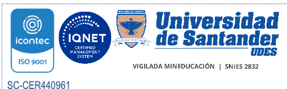
Cómo crear, subir y editar datos en las herramientas que sostienen el sistema de gestión de la calidad. Guía para vicerrectores, decanos y directores de programa.
Este manual es información documentada del Sistema de Gestión de la Calidad. Dice cómo se opera Aluna Planeación para que los datos de gestión queden completos, trazables y verificables.
| Versión | Fecha | Descripción del cambio | Elaboró |
|---|---|---|---|
| 01 | Noviembre de 2026 | Emisión inicial del manual. | Planeación Institucional |
| Acción | Cargo | Nombre | Fecha y firma |
|---|---|---|---|
| Elaboró | Oficina de Planeación Institucional | [NOMBRE] | [FIRMA] |
| Revisó | Líder del Sistema de Gestión de la Calidad | [NOMBRE] | [FIRMA] |
| Aprobó | [CARGO QUE APRUEBA] | [NOMBRE] | [FIRMA] |
Lo que aún no tiene dato va entre corchetes: el código del documento y las firmas los asigna la unidad de Calidad al aprobar la versión. Ninguna cifra de este manual es real: las capturas muestran un usuario de prueba.
Cada capítulo abre con una ficha de control (objetivo, responsable, numeral ISO 9001 y registro). Los números sobre las capturas son los de los pasos. Los botones van como en pantalla: «Guardar cambios».
Seis capítulos. Los cinco primeros son las herramientas; el último junta lo que cada herramienta aporta al sistema de gestión de la calidad.
Todas las pantallas de este manual requieren sesión iniciada en la intranet. El menú que usted ve depende del rol y de la unidad que Planeación le asignó.
Aluna Planeación es la intranet de la Oficina de Planeación Institucional. Reúne los módulos donde las unidades reportan, revisan y consultan su gestión. Entre desde planeacion.udes.edu.co/acceso-intranet con su correo institucional.
Escriba lo que quiere hacer, por ejemplo «cargar cifras». También sirve la tecla /.
Cada mosaico trae botones directos: «Registrar cifras», «Mi informe».
El panel Pendientes avisa lo que falta, con un botón «Ir».
«Recorrido guiado» explica cada pantalla con Mr. Pilo.
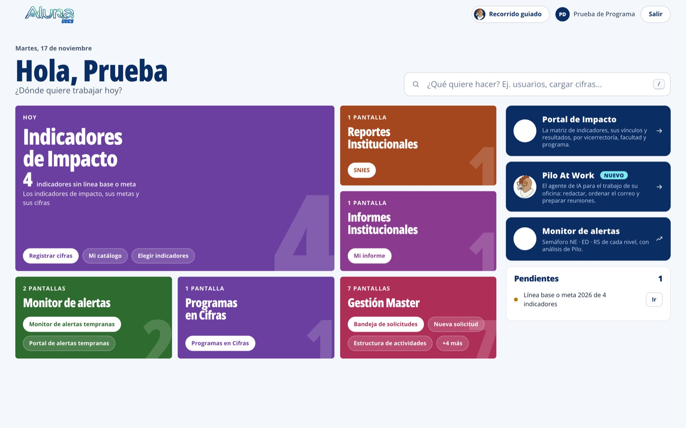
1234| Perfil | Qué ve | Qué puede hacer |
|---|---|---|
| Director de programa | Su programa y su sede | Elegir indicadores, reportar cifras y evidencia, abrir su monitor de alertas. |
| Decano | Su facultad y los programas que cuelgan de ella | Leer el avance por programa, redactar el informe de la decanatura, revisar alertas. |
| Vicerrector u oficina | Las funciones sustantivas a su cargo | Crear fichas de indicadores, cargar cifras institucionales, importar desde Excel, llevar su informe. |
| Planeación | Todo | Abre el ciclo de informes, aprueba o devuelve, asigna programas a unidades. |
Si no ve un módulo, no es un fallo: el menú se arma con su pertenencia a una unidad. Pida a Planeación que lo ubique en la estructura institucional.
Cada módulo produce un registro que la norma ISO 9001:2015 pide tener: metas medibles, seguimiento, evidencia y acciones de mejora. Esta tabla dice cuál.
| Módulo | Para qué sirve | Numeral ISO 9001 | Registro que deja |
|---|---|---|---|
| Indicadores de Impacto | Línea base, metas y cifras anuales por función sustantiva, de insumos a impacto real. | 6.2 · 9.1 | Cifra por indicador, año y programa, con enlace de evidencia. |
| Informes Institucionales | Informe de gestión anual con foto de cifras al enviar y aprobación de Planeación. | 9.1.3 · 9.3 · 10.3 | Informe enviado y aprobado, con anexos y notas de revisión. |
| Monitor de alertas | Semáforo NE · ED · RS de las notas por periodo y corte. | 9.1.1 · 8.5.1 | Lectura del corte y decisión de acompañamiento. |
| Portal de Alertas Tempranas | Cohortes, estimaciones y cursos con alta reprobación. | 9.1.3 · 10.3 | Priorización de cursos y grupos. |
| UDRIVE | Archivos, tablas, gráficas e informes con versiones y estados. | 7.5.2 · 7.5.3 | Versión aprobada y congelada de cada informe. |
Cada dato lleva su fuente, su corte y su evidencia. Sin evidencia, el informe no se envía.
Lo que nadie ha reportado se ve como «sin reportar». Así no se confunde falta de dato con mal resultado.
Al enviar o aprobar, las cifras quedan como estaban. Para cambiarlas, Planeación devuelve el informe con una nota.
La correspondencia entre módulos y numerales es una guía de lectura de Planeación, no un texto de la norma. La unidad de Calidad confirma el numeral exacto de cada registro al aprobar este manual.
Aquí se define qué mide la universidad y cuánto avanza. Cada indicador pertenece a una función sustantiva (Investigación, Enseñanza o Extensión) y a un eslabón de la cadena de valor.
Cómo funciona. Las vicerrectorías y oficinas crean las fichas institucionales y reportan las cifras globales. Los programas eligen a cuáles aportan y reportan su línea base, sus metas, su cifra de cada año y un enlace de evidencia. Cada programa también puede crear indicadores propios.
El resultado se consulta en el Portal de Impacto y en el Boletín de Seguimiento en PDF.
Una cadena completa significa que cada impacto tiene su antecedente. Si falta un eslabón, el panel de «Elegir indicadores» lo avisa.
| Función | Código | Quién define las fichas |
|---|---|---|
| Investigación | I01, I02… | Vicerrectoría de Investigación |
| Enseñanza | E01, E02… | Vicerrectoría de Enseñanza |
| Extensión | X01, X02… | Vicerrectoría de Extensión |
Los códigos con P- son indicadores propios de un programa.
Las pestañas dependen de su pertenencia a una unidad, no de su cargo. Si no ve la que busca, pida a Planeación que lo ubique en la estructura institucional.
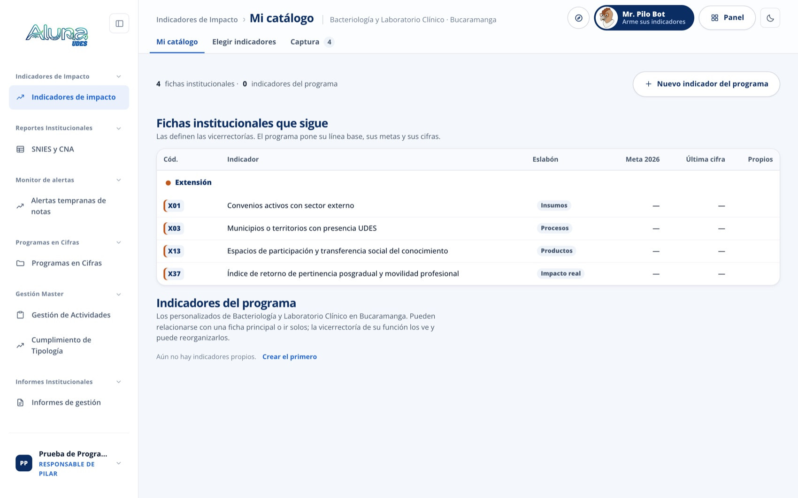
123| Perfil | Pestañas |
|---|---|
| Programa o facultad | «Mi catálogo», «Elegir indicadores» y «Captura». La captura se habilita cuando ya sigue algún indicador. |
| Vicerrectoría u oficina | «Mi vicerrectoría» (o «Mi oficina»), «Captura», «Pilares y ODS», «De los programas» e «Importar». |
| Planeación y administración | Todo lo anterior, más el diccionario del motor y los ajustes de Mr. Pilo. |
Dentro de una vicerrectoría o un programa, el papel de cada miembro es visor, editor o jefe. El visor solo mira; el editor y el jefe pueden editar. Un programa hereda el papel de su facultad.
Antes de reportar, el programa dice a qué indicadores institucionales aporta. Marcar guarda al instante, y quitar uno no borra lo ya reportado.
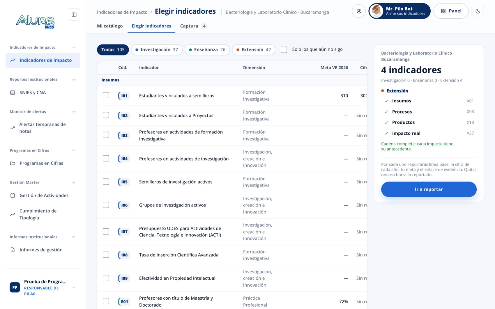
1234Pulse «Elegir indicadores». Los chips filtran por función: «Investigación», «Enseñanza» y «Extensión».
Active la casilla de cada fila. «Solo los que aún no sigo» muestra lo pendiente.
El panel de la derecha cuenta los indicadores por función y avisa si la cadena está completa.
Pulse «Ir a reportar». Queda bloqueado mientras no marque ninguno.
Cód. código de la ficha (I Investigación, E Enseñanza, X Extensión) · Dimensión tema dentro de la función · Meta VR 2026 meta institucional; un guion significa que aún no se define · Cifra UDES última cifra institucional, o «Sin reportar».
Si una ficha es solo de consulta, el programa la ve pero no reporta cifra: la reporta la vicerrectoría.
Si ninguna ficha institucional mide lo que su programa necesita, cree un indicador propio. El asistente tiene cinco pasos y guarda en el catálogo del programa.
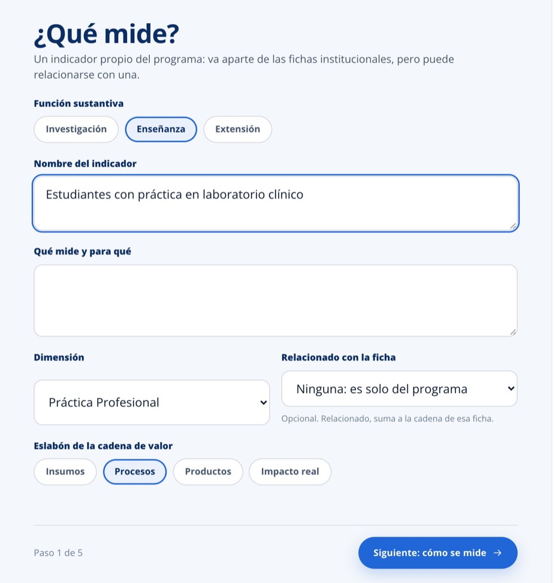
222En «Mi catálogo» pulse «Nuevo indicador del programa».
Elija la función, escriba el nombre y el eslabón. El nombre dice qué se cuenta y de quién: «Estudiantes vinculados a semilleros».
Forma de medir (número, porcentaje, proporción, pesos o categoría), numerador, denominador, unidad, «Mejor si» sube o baja, fuente y responsable.
Línea base 2023, meta 2026 y meta 2028. Escriba «≥ 80%» o «85%» tal como los fijó el programa.
Acepte las sugerencias con «Tomar las sugerencias del motor» o elija a mano.
El paso 5 lista lo que falta. Pulse «Guardar en el catálogo del programa»; puede completar después.
Puede relacionar el indicador con una ficha institucional (campo Relacionado con) para que sume a su cadena. Si queda solo del programa, la vicerrectoría de esa función igual lo ve.
Las fichas las crean las vicerrectorías y oficinas. Una ficha en borrador la ve solo su vicerrectoría; al publicarla, los programas pueden elegirla.
Abra /admin/impacto/catalogo. La tabla lista código, indicador, dimensión, unidad, metas y estado de la ficha.
«Nuevo indicador» abre el asistente de cinco pasos.
Qué mide, cómo se mide, línea base y metas, pilares y ODS.
Desmarque «Los programas reportan su propia cifra» si solo la vicerrectoría tiene el dato.
«Guardar como borrador» o «Publicar». Una vez publicada, los programas pueden elegirla.
| Regla | Detalle |
|---|---|
| Código | De 1 a 4 letras y de 1 a 3 cifras, por ejemplo E30. Si ya existe, el botón Siguiente se bloquea. |
| Nombre | Más de 3 caracteres; diga qué se cuenta y de quién. |
| Estado de la ficha | Borrador solo la ve su vicerrectoría · Publicada los programas pueden elegirla · Retirada deja de ofrecerse. |
| Editar | Pulse el código o el nombre: se abre un panel con las secciones de la ficha y el botón Guardar. |
Las fichas con la marca «Sugerido CESU» vienen recomendadas para los programas. Considere publicarlas primero.
La pestaña «Captura» muestra un indicador a la vez. A la izquierda está la cola; en el centro, el año y la cifra; a la derecha, la meta de la vicerrectoría y las suyas.
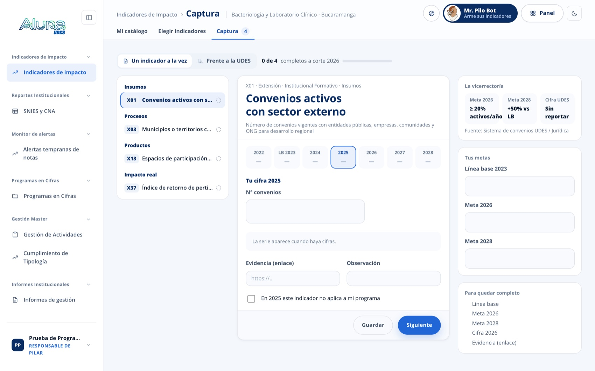
1234567«Un indicador a la vez» o «Frente a la UDES» para comparar con la cifra institucional.
Escoja una fila de la cola, agrupada por eslabón.
Use los botones «LB 2023», 2024… 2028.
Si es porcentaje, ponga numerador y denominador: la cifra se calcula sola. Puede escribirla directo.
Un enlace que empiece por http:// o https://. Sin enlace válido, «Guardar» se bloquea.
Línea base 2023, meta 2026 y meta 2028 del programa.
«Guardar» o «Guardar y seguir». Para editar una cifra ya guardada, vuelva a abrirla y cámbiela.
«No aplica» es distinto de dejar vacío: use la casilla «En este año el indicador no aplica a mi programa».
Las vicerrectorías pueden escribir en la hoja de «Captura» o cargar muchas cifras de una vez desde Excel. La carga valida todo antes de guardar: si hay un error, no se guarda nada.
«Descargar plantilla» trae sus fichas, el año de corte y las listas de sedes y programas.
Una fila por cifra: código, año, alcance (Global, Sede o Programa), valor, numerador, denominador y nota.
«Cargar archivo». La vista previa marca cada fila: Nueva Cambia Igual.
«Cargar N cifras». Las iguales no se tocan.
| Mensaje | Qué hacer |
|---|---|
| No se pudo leer el archivo | Guárdelo como .xlsx. Los .xls antiguos y los CSV no se leen. |
| La ficha X no está entre las suyas | Solo carga cifras de las fichas que su unidad edita. Pida acceso al jefe de la unidad dueña. |
| Con alcance Sede hay que elegir la sede | Escoja la sede de la lista desplegable; no la escriba a mano. |
| El denominador no puede ser cero | Corrija el denominador o deje numerador y denominador vacíos. |
| Repite la fila N | Hay dos filas con la misma ficha, año y alcance. Deje una. |
| La evidencia tiene que ser un enlace que empiece por http | Pegue la dirección completa del documento. |
El avance de un indicador es la cifra más reciente dividida entre la meta 2026. En lo que debe bajar, como la deserción, el cociente se invierte.
El portal muestra el estado de los indicadores sin editar nada. Sirve para preparar reuniones, decidir dónde reforzar y descargar el boletín en PDF.
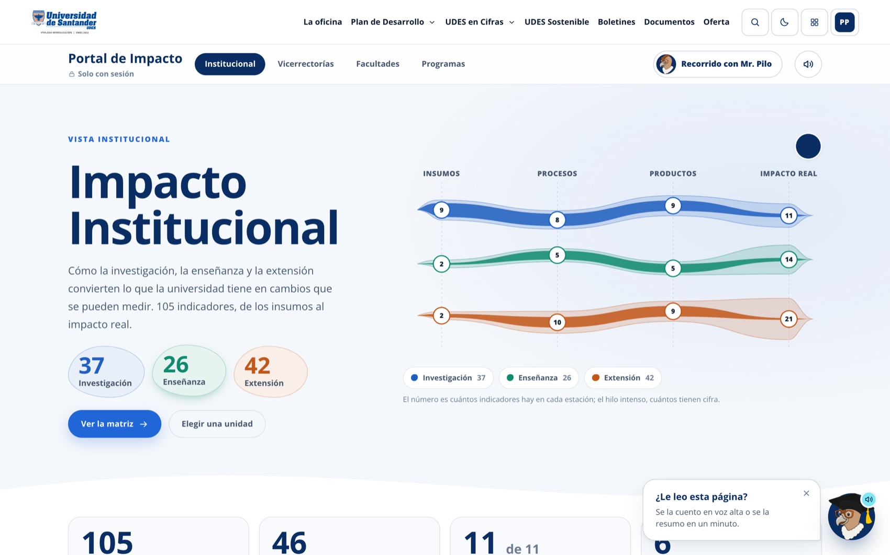
123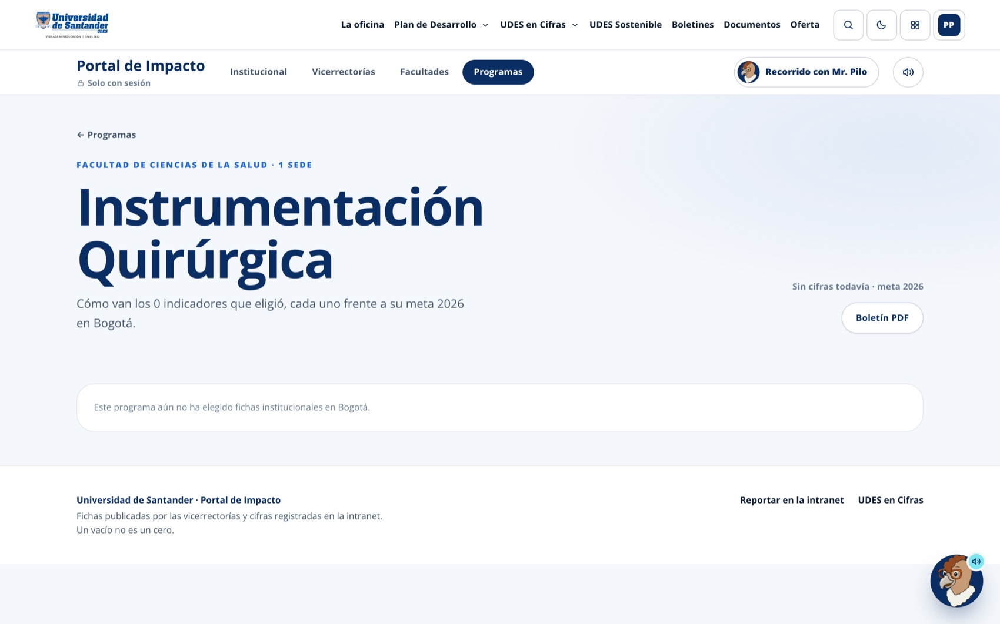
4| Vista | Ruta | Responde |
|---|---|---|
| Institucional | /impacto | ¿Cómo va la universidad en cada eslabón y función? |
| Vicerrectorías | /impacto/vicerrectoria/:función | ¿Cómo cumple cada facultad en esta función? |
| Facultades | /impacto/facultad/:facultad | ¿Qué tan parejos van sus programas? |
| Programas | /impacto/programa/:programa | ¿Cómo van los indicadores de cada programa frente a su meta 2026? |
Pulse «Boletín PDF» y luego «Descargar PDF». En el diálogo de impresión elija «Guardar como PDF» y active «Gráficos de fondo».
Es el informe de gestión anual de decanaturas, vicerrectorías, oficinas, rectorías de campus y Rectoría General. Se escribe sobre plantillas estándar, con las cifras ya cargadas desde UDES en Cifras y el Plan de Desarrollo.
Cómo funciona. Hay un ciclo por año. Planeación lo abre; cada unidad diligencia su informe; el gestor lo envía; Planeación lo aprueba o lo devuelve con notas por sección.
Las cifras siguen en vivo mientras es borrador. Al enviar, el sistema toma una foto y se bloquea. Al aprobar, queda congelado.
| Paso | Quién lo hace |
|---|---|
| Borrador → Enviado | Gestor de la unidad o Planeación |
| Devuelto → Borrador | Gestor, contribuyente o Planeación |
| Enviado → Aprobado o Devuelto | Solo Planeación |
| Aprobado → Devuelto («Reabrir y devolver con nota») | Solo Planeación |
Plantillas: A decanatura, a Rectoría de Campus · B vicerrectoría u oficina, a Rectoría General · C rectoría de campus, a Rectoría General · D Rectoría General, al Consejo Superior.
Planeación abre el ciclo del año y el informe de cada unidad. Si usted ve que Planeación todavía no lo abrió, no es un error: no hay nada que diligenciar aún.
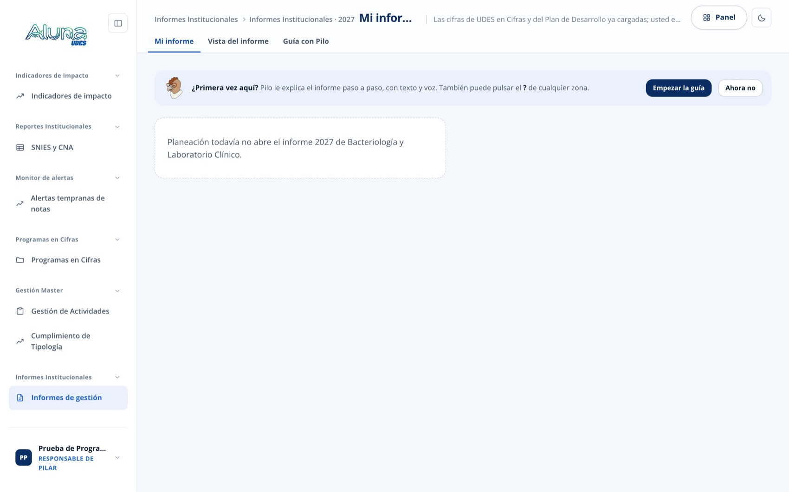
123Abra /admin/informes-gestion/mi-informe. El año va en la cabecera.
La cabecera dice «su papel»: Gestor, Contribuyente, Consulta o Planeación.
Si falta el informe, pida a Planeación que lo abra con la plantilla que corresponde a su unidad.
/admin/informes-gestion → «Tablero del ciclo».
Complete año, nombre, «Fecha límite», «Corte de las cifras» y estado (En preparación, Abierto o Cerrado).
Por plantilla: marque cada dato como «Justificar», sugerido o no. Un dato a justificar queda bloqueado hasta que la unidad escribe una línea.
En «Entrega por unidad» abra los informes con su plantilla y siga el avance general.
Una unidad sin unidad asignada ve: «Su usuario no tiene ninguna unidad asignada». Pida a Planeación que se la asigne en «Dónde trabaja».
El informe se escribe por secciones. Cada una tiene un punto de color: sin empezar, en curso o lista. Los cambios se guardan solos y el mensaje dice «Cambios guardados».
La tira «Secciones del informe» lista todas con su avance.
Use claves como [[matric]] para insertar una cifra viva. Un número escrito a mano genera advertencia.
«Pilo redacta un borrador» reemplaza el texto; confirme cada cifra antes de aceptarlo.
A la derecha, en ámbar, lo que falta: cifras sin justificar, logros sin evidencia, metas.
| Sección | Qué hace usted |
|---|---|
| Resumen y conclusiones | Texto propio; mínimo 25 palabras. |
| Alineación con el PDI | Marque los pilares con los que se articula la unidad y escriba su aporte. |
| Objetivos y metas | En facultades y programas llegan de Impacto. Para metas propias: «Añadir meta» con programado y alcanzado. |
| Resultados por dimensión | Cifra actual, anterior y meta; el estado se calcula solo. «Añadir cifra» o «Añadir acción». |
| Puntos críticos y retos | Una fila por punto, con acción y fecha. Se puede importar desde Excel. |
| Logros destacados | Máximo tres, cada uno con evidencia. |
Cuando una cifra de UDES en Cifras cambia, el informe avisa «cambió de X a Y» y la unidad la acepta. Un dato marcado «Justificar» pide una línea de explicación.
Todo informe lleva la sección «Evidencias y fuentes de verificación». No se puede desactivar y es obligatoria: sin al menos un archivo o enlace, el informe no se envía.
Arrastre el archivo a «Suelte archivos o haga clic». Acepta PDF, Word, Excel o imagen, hasta 15 MB.
Mientras sube dice «Subiendo…». Aparece en la tabla «Archivo o enlace».
En «https://… (documento en línea)» pegue el enlace de Drive.
Escriba el nombre en «Nombre del documento» y pulse «Añadir enlace».
En cualquier sección puede pulsar «+ Agregar una tabla o gráfica de UDrive», buscar en su UDrive y elegir. Si la tabla ya no existe o está en la papelera, el informe avisa «No se pudo leer la tabla de UDrive».
Un enlace de Drive debe tener permiso de lectura para quien revisa. Ábralo en una ventana privada antes de enviarlo.
Cuando todas las secciones están listas y hay evidencia, el gestor envía el informe. Planeación lo lee y decide.
Todas en «Lista» y con evidencia cargada.
El botón dice «Enviar a Rectoría de Campus» (o su destino). Si está bloqueado, el motivo aparece debajo.
Queda «Enviado el [fecha]. Esperando la revisión de Planeación». Las cifras quedan congeladas.
Verá «Planeación lo devolvió» y una nota por sección. Corrija y reenvíe.
/admin/informes-gestion/revision. Filtre: Por revisar, Devueltos, Aprobados o Todos.
Se lee tal como quedará, con la foto de cifras tomada al enviar.
Una por sección y una general. Para devolver se necesita al menos una.
«Aprobar» congela el informe. «Devolver con nota» lo vuelve a la unidad.
| Mensaje bajo el botón | Qué falta |
|---|---|
| Se habilita cuando las N secciones estén listas (van M) | Marque como lista cada sección pendiente. |
| Faltan las evidencias y fuentes de verificación | Cargue al menos un archivo o enlace. |
| Solo el Gestor de la unidad o Planeación envían el informe | Pida al gestor que lo envíe. |
| Ya se envió: Planeación lo revisa | No hace falta nada. Espere la decisión. |
La pestaña «Vista del informe» muestra el informe como saldrá en papel. Desde ahí se descarga el PDF oficial en Carta o A4.
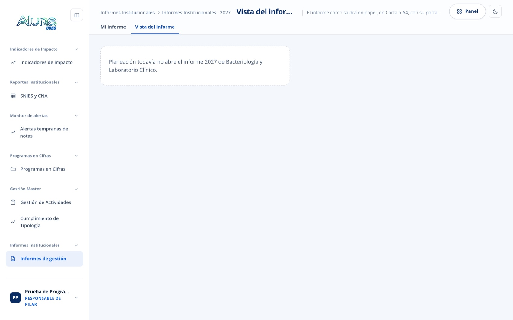
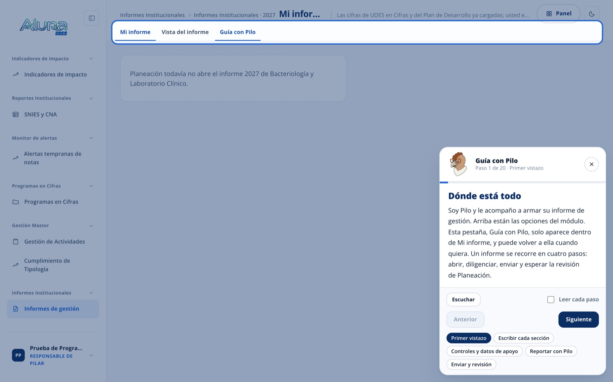
Pulse «Vista del informe».
«Carta» o «A4». Personalice la portada y el cierre si lo necesita.
«Descargar PDF». Abre una previa y genera el PDF oficial.
Un borrador lleva la marca «Cifras en vivo». Uno enviado o aprobado dice «Foto del [fecha]».
El informe completo no se exporta a Excel. Solo las plantillas de filas y metas, y la configuración de datos requeridos, tienen «Descargar plantilla» e «Importar Excel».
El monitor muestra cómo van las notas de los estudiantes en el periodo. Recorre Institución, Facultad, Programa, Grupo y Estudiante con un semáforo de tres niveles.
Cómo funciona. Planeación carga el «Reporte global de notas» de Davinci en el Warehouse. El monitor lo lee por periodo, sede y corte (P1, P2, P3) y muestra el código real del estudiante, sin nombre.
Una alerta no se cierra en el sistema. Es una señal para acompañar, no una calificación ni una sanción. Usted actúa fuera de la herramienta: habla con el estudiante o con el docente del curso.
| Nivel | Nombre | Cuándo se asigna |
|---|---|---|
| NE | Nivel Esperado | Promedio de 3,5 o más y ninguna materia perdida. |
| ED | En Desarrollo | Promedio de 3,0 a 3,49, o una materia perdida. |
| RS | Requiere Seguimiento | Promedio menor de 3,0, dos o más materias perdidas, o una caída de 0,5 o más frente al corte anterior. |
Aprobar es 3,0 (en Medicina, 3,5). Un estudiante se clasifica en un corte solo si ya tiene nota en la mitad o más de sus materias.
Las notas salen del «Reporte global de notas» de Davinci, cargado en el UDES Warehouse. Cada periodo y sede es una carga distinta. El código del estudiante es un dato personal: úselo solo para su seguimiento académico.
El recorrido va de lo general a lo particular: elija periodo y sede, abra la unidad con más estudiantes en seguimiento y baje hasta el estudiante.
Arriba a la derecha: por ejemplo 2026b y Bucaramanga. Al cambiarlos, el recorrido se reinicia.
P1, P2 o P3. Se abre el último corte con notas; los que aún no tienen notas aparecen deshabilitados.
La primera fila de «Dónde hay que actuar» lleva esa marca: es donde más estudiantes están en seguimiento.
Abra la facultad, luego el programa y su lista de grupos.
Verá los estudiantes por código, con su nivel. Busque los RS.
«Sus materias» muestra la nota de cada corte y la tendencia.
| Pestaña | Qué responde |
|---|---|
| Cómo evoluciona | Cuánto pesan NE, ED y RS en cada corte. Cada columna suma 100 %. |
| Cursos con alta reprobación | Materias con 30 % o más bajo la nota de aprobar y al menos 15 estudiantes con nota. |
| Análisis de Pilo | Resumen en palabras, hecho solo con conteos. Pilo nunca recibe códigos de estudiantes. |
Un grupo requiere seguimiento cuando 30 % o más de quienes ya tienen nota va por debajo de la de aprobar; en desarrollo, desde 15 %.
Además del semáforo por estudiante, el monitor tiene una segunda mirada: dónde se reprueba. Úsela para decidir qué cursos reforzar.
Pulse «Mapa de riesgo» («dónde se reprueba»).
«Tres cortes» o «Nota final: todos los planes». P1, P2 y P3 usan solo los grupos de plan «Tres cortes».
Facultad → programa → curso → grupo. En un curso, abra un grupo para ver los códigos.
| Tasa de reprobación | Lectura |
|---|---|
| 30 % o más | Alta |
| 50 % o más | Crítica |
| Menos de 5 | Sin detalle: pocas matrículas |
Escriba al menos 2 caracteres del código en «Buscar código de estudiante» y elija el resultado: lo lleva directo a su vista. Solo busca entre lo que usted ya puede ver.
El desplegable «Cómo se clasifica», al pie, deja cambiar cuatro valores: promedio para NE (3,5), promedio para RS (3,0), materias perdidas para RS (2) y caída entre cortes (0,5). Los gráficos se recalculan en pantalla. No se guardan: al recargar vuelven los valores oficiales.
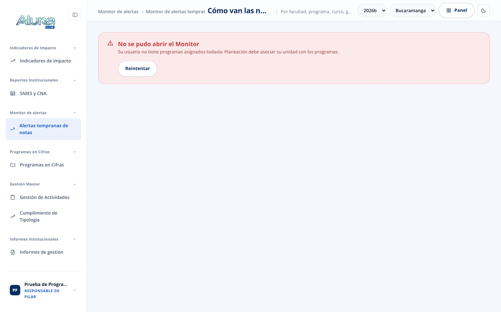
12El aviso «Su usuario no tiene programas asignados todavía» significa que Planeación debe asociar su unidad con los programas. Pida la asignación y pulse «Reintentar».
Solo Planeación ve el panel que asigna programas a unidades. El filtro lo aplica la base de datos, no el navegador.
Es el monitor presentado como portal propio, con sesión. Se organiza por Facultad, Programa y Semestre y permite seguir una cohorte a lo largo de los periodos.
Qué añade al monitor. Estimaciones: las notas de cortes que aún no existen, el promedio esperado el próximo periodo y la probabilidad de deserción del modelo del estudio UDES.
Para qué sirve. Dimensionar el acompañamiento de un grupo. No sirve para decidir sobre una persona: es una estimación de grupo, no predice a nadie.
| Sección | Ruta | Responde |
|---|---|---|
| Inicio | /alertas | Elegir facultad, programa y semestre. |
| Panorama | /alertas/panorama | ¿Cómo está la cohorte hoy y qué se espera? |
| Mapa de riesgo | /alertas/riesgo | ¿Dónde se reprueba, por campus, facultad, programa y curso? |
| Estudiantes | /alertas/estudiantes | ¿Quién necesita seguimiento? Lista por código. |
| Cursos críticos | /alertas/cursos | ¿Qué materias reprueban mucho y cómo evolucionan? |
| Cómo se calcula | /alertas/metodo | Reglas y límites, escritos para leer. |
Los mismos datos del monitor (UDES Warehouse), más el historial por estudiante y periodo. Lo agregado con menos de 5 matrículas no se muestra. No se guardan nombres, documento ni contacto.
Elija facultad, programa y semestre una sola vez; el alcance viaja en la dirección y se conserva al cambiar de sección.
Elija «Facultad», «Programa» y «Semestre» (1 a 10 o «Todos los semestres»). Verifique sede y periodo.
Abre el titular: «N de M estudiantes requieren seguimiento».
Estima cuántos cerrarían con promedio menor de 3,2 y entrarían en prueba académica.
Mueva «Cambio del promedio» de -0,5 a +0,5 para ver qué pasaría con un grupo.
Las palabras subrayadas (NE, ED, RS, prueba académica, banda del 80 %) abren un recuadro explicativo al pulsarlas. Se cierra con Esc.
Para ver solo lo real, en «Mapa de riesgo» apague el interruptor «Estimar cortes sin notas».
Tres pantallas para pasar del panorama a la acción: a quién acompañar, qué cursos reforzar y cómo se calcula cada número.
«Requieren seguimiento», «En desarrollo» o «Nivel esperado».
Muestra trayectoria por periodos y lo que se espera.
El contacto se hace fuera del portal.
Un curso requiere seguimiento cuando reprueba 30 % o más. Elija el corte y revise «Reprobación por curso», el mapa de calor por periodo y «Evolución de los cursos críticos». Los cursos del semestre siguiente muestran qué se avecina: conviene reforzar antes de que lleguen.
| Concepto | Regla |
|---|---|
| Nivel NE · ED · RS | El mismo del Monitor de alertas. |
| Nota que falta | Se estima con las notas previas del periodo y el promedio del periodo anterior; la banda del 80 % se abre con cada corte estimado. |
| Deserción | Regresión logística del estudio UDES (Pérez et al., 2023): facultad, promedio, edad y origen. |
| Reprobar | Menos de 3,0 (Medicina, menos de 3,5). Alta desde 30 %; crítica desde 50 %. |
«Es una estimación de grupo. No identifica causas, no predice a una persona y no reemplaza la conversación con el estudiante.» Texto de la sección Cómo se calcula.
UDRIVE guarda carpetas, archivos subidos, tablas editables, gráficas e informes por bloques. Los equipos trabajan en unidades de trabajo: espacios con nombre, personas con papel y cuota de almacenamiento.
Cómo funciona. Cada persona tiene «Mis archivos». Fuera de las unidades, quien crea una carpeta es su dueño y la comparte por correo. Dentro de una unidad manda el papel de cada persona.
Los informes llevan versiones, estados (Borrador, En revisión, Aprobado) y turnos de edición para que nadie pise el trabajo de otro.
| Papel | Puede |
|---|---|
| Solo ver | Abrir, descargar y comentar. |
| Editar | Lo anterior y cambiar archivos que ya existen. |
| Crear | Lo anterior, subir archivos, crear carpetas y mandar a la papelera lo que creó. |
| Administra | Lo anterior, borrar para siempre, vaciar la papelera, gestionar personas y archivar. |
Si al abrir UDRIVE ve «sin permiso», su rol no tiene la pantalla habilitada. Pida a Planeación o a la administración que se la active.
Todo se crea desde el botón «Nuevo». El guardado de tablas e informes es automático.
«Nuevo» → «Nueva carpeta», en «Mis archivos» o en «Archivos de la unidad».
Si ya existe: «Ya hay una carpeta con ese nombre aquí».
Aparece «Carpeta creada».
O arrastre archivos a la zona «Suelte aquí archivos de cualquier tipo».
Hasta 100 MB cada uno. Las imágenes se reducen a 2000 px.
Dice «Preparando…», «Subiendo» y «Listo».
«Nuevo» → «Nueva tabla», o «Tabla desde Excel o CSV».
«Pegar desde Excel» o «Importar Excel o CSV» (agregar o reemplazar).
Los paneles «Columnas» y «Cómo se ve en el documento» controlan el formato.
Las celdas en rojo son valores por revisar.
«Marcar como lista». Pide corregir primero los rojos.
| Mensaje | Qué hacer |
|---|---|
| «x» pesa y; el máximo es 100 MB | Comprima el archivo o divídalo. |
| «x» está vacío | Revise el archivo original. |
| Su sesión no está lista | Recargue la página e intente de nuevo. |
| La unidad llegó a su cuota | Quien administra puede pedir más espacio. |
El botón «A la papelera» guarda 30 días. Solo quien administra o es propietario puede usar «Borrar para siempre», y no se puede deshacer.
El informe se edita por bloques, con cifras vivas, gráficas y citas. Al aprobarlo, las cifras se congelan y queda una versión que sirve de registro.
«Nuevo» → «Nuevo informe». Elija plantilla, nombre, estilo y carpeta.
Use «Estilo del bloque» para títulos y listas, y «Insertar cifra viva» para datos.
Desde el bloque o con «Usar en un informe» en la tabla.
Cambie el estado a «En revisión».
«Aprobar…» → «Aprobar y congelar las cifras», con una nota opcional.
Un informe se edita por turnos de 3 minutos que se renuevan solos. Si otra persona lo tiene, el documento se abre en solo lectura. Pulse «Pedir el turno» y avise a quien lo tiene; quien lo tiene puede «Ceder el turno». Si deja de editar, el turno se libera en unos minutos.
| Acción | Qué pasa |
|---|---|
| Guardar versión | Guarda una copia con nota, por ejemplo «Antes de enviar a revisión». También se guarda al aprobar o restaurar. |
| Ver con los datos de entonces | Abre la versión con las tablas y gráficas de ese momento. |
| Restaurar | Vuelve a esa versión y guarda una nueva. |
| Aprobar y congelar | El informe queda en solo lectura, las cifras vivas toman el valor de hoy y sale la marca de borrador del PDF. |
El PDF sale del diálogo «Guardar como PDF» del navegador. Antes, una revisión previa avisa figuras sin título, citas sin definir o cifras vivas que cambiaron.
Una unidad de trabajo es el espacio de un equipo. Quien la crea queda con papel «Administra». No necesita aprobación.
/admin/udrive/unidades → «Nueva unidad».
Nombre (3 a 120 caracteres), descripción corta y carpetas iniciales.
Monograma, color y icono. El color debe contrastar 4,5:1 con blanco.
Quién entra y con qué papel.
Aparece «Abrir la unidad».
Dentro de la unidad, sección «Personas».
«Buscar a una persona» por nombre o correo institucional.
«Papel al añadir»: Solo ver, Editar, Crear o Administra.
«Añadir varias personas a la vez»: una unidad de la estructura o pegar correos.
Solo el propietario ve el botón. Dentro de unidades no existe.
La persona debe tener cuenta en la intranet.
«Solo puede ver» o «Puede editar», y pulse «Compartir».
Un correo fuera de udes.edu.co exige fecha de vencimiento (máximo 730 días) y no puede administrar.
Cada unidad tiene 5 GB. Avisa al 80 % y al 100 % no deja subir. Quien administra usa «Pedir más espacio».
La unidad necesita al menos una persona con papel Administra. Antes de cambiar el papel de la única que administra, nombre a otra.
Un sistema de gestión de la calidad se audita con registros. Esta lista dice qué debe quedar hecho en Aluna Planeación y quién responde por cada cosa.
| Quién | Qué debe dejar | Dónde | Cuándo |
|---|---|---|---|
| Director de programa | Indicadores elegidos; línea base, metas y cifra por año con enlace de evidencia. | Indicadores de Impacto · Captura | Cada corte anual |
| Decano | Informe de la decanatura enviado, con evidencia; seguimiento de alertas de su facultad. | Informes · Monitor de alertas | Fecha límite del ciclo; cada corte |
| Vicerrector | Fichas publicadas, cifras institucionales cargadas, informe de la vicerrectoría. | Impacto · Informes | Cada año |
| Planeación | Ciclo abierto, informes aprobados o devueltos con nota, programas asignados a unidades. | Informes · Monitor | Todo el ciclo |
Cuando una cifra no llega a su meta, un curso reprueba por encima del 30 % o una evidencia no sirve, lo que corresponde es dejarlo escrito y actuar. Aluna Planeación ya tiene dónde: Puntos críticos y acciones de mejora en el informe (acción y fecha), la columna de observación en la captura de Impacto y las notas de revisión de Planeación.
La unidad de Calidad define cómo se abre y se cierra una acción correctiva formal (numeral 10.2). Este manual solo señala dónde queda el registro dentro de la herramienta.
| Pregunta | Respuesta |
|---|---|
| No veo un módulo en el menú. | El menú se arma con su unidad y su rol. Pida a Planeación que lo ubique en la estructura institucional. |
| El monitor dice que no tengo programas asignados. | Planeación debe asociar su unidad con los programas. Luego pulse «Reintentar». |
| ¿Puedo corregir un informe ya enviado? | No. Planeación lo devuelve con una nota; usted corrige y reenvía. |
| ¿Qué pasa si una cifra de UDES en Cifras cambia? | Mientras el informe es borrador, el informe avisa «cambió de X a Y» y usted la acepta. Enviado, ya no cambia. |
| ¿Puedo borrar una cifra de Impacto? | Quitar un indicador de su lista no borra lo reportado. Para cambiar una cifra, ábrala y edítela. |
| ¿Una alerta se cierra? | No. El monitor es de lectura. Se atiende hablando con el estudiante o el docente. |
| Término | Significado |
|---|---|
| Ficha | Definición de un indicador institucional: qué mide, cómo, metas y pilares. |
| Eslabón | Insumos, procesos, productos o impacto real: el lugar del indicador en la cadena de valor. |
| Corte | Momento del periodo con notas: P1, P2, P3 o nota final. |
| NE · ED · RS | Nivel Esperado, En Desarrollo y Requiere Seguimiento. |
| Foto de cifras | Copia de las cifras al enviar un informe; ya no cambia. |
| Unidad de trabajo | Espacio de UDRIVE con personas, papeles y cuota. |
| Gestor | Jefe de la unidad: diligencia y envía el informe. |
Soporte de Aluna Planeación: [CORREO DE CONTACTO]. Mesa de ayuda: [EXTENSIÓN]. Los datos de contacto los confirma Planeación antes de publicar.
Pregúntele a Mr. Pilo en cualquier pantalla con el botón ?, o escriba a la Oficina de Planeación Institucional.